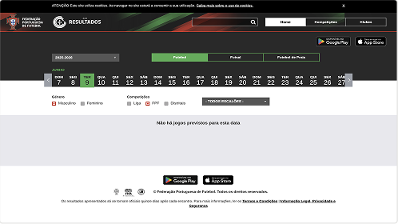
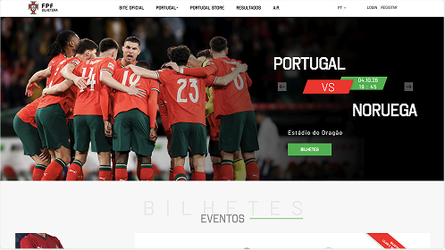
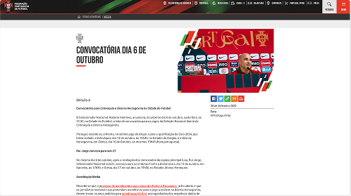
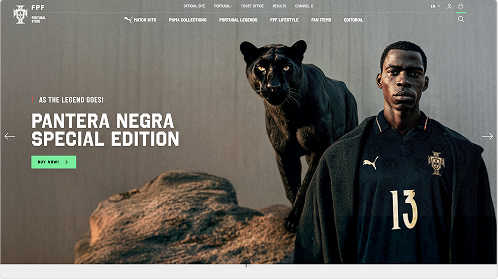
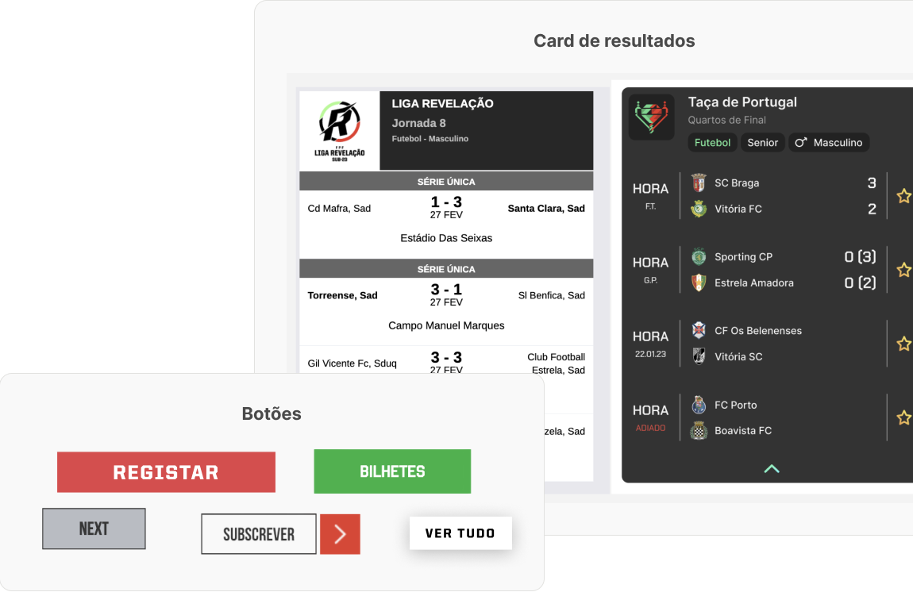
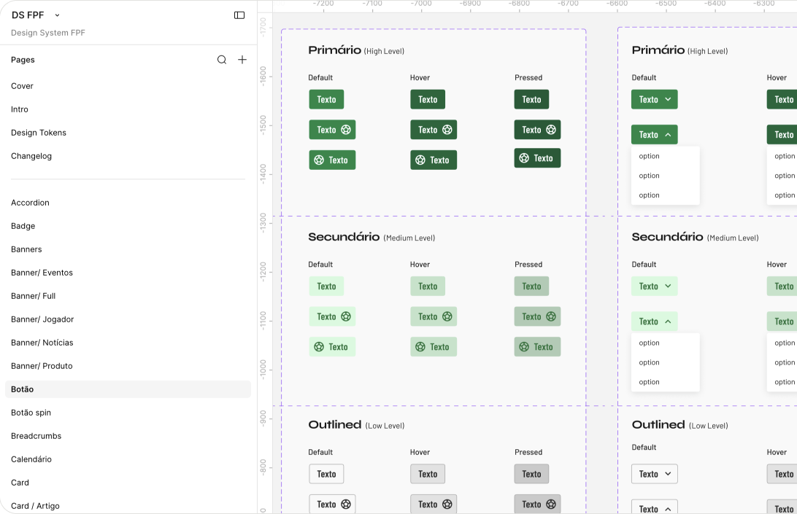
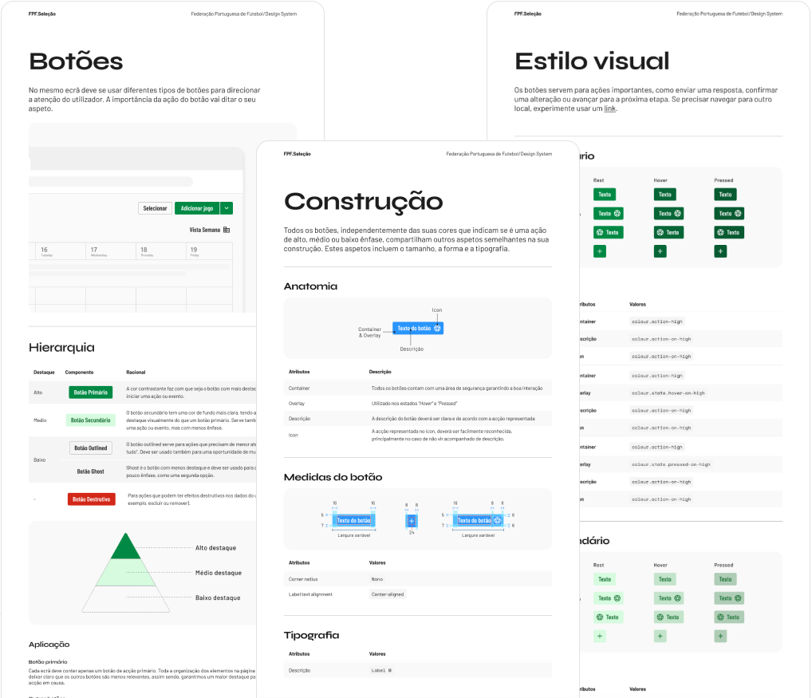
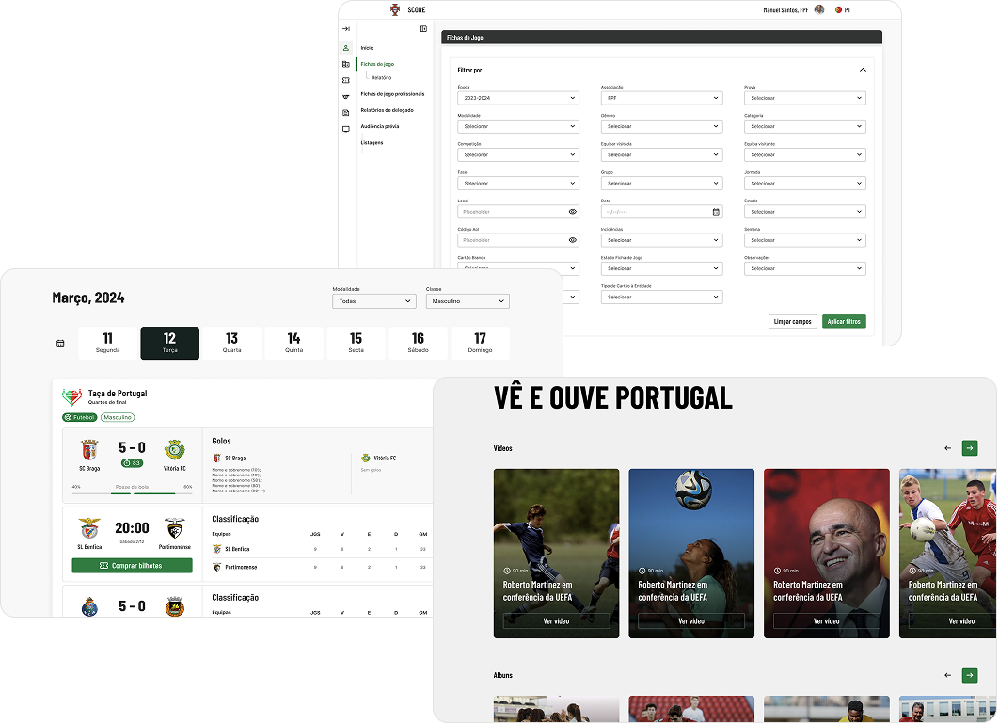

Como um Design System contribuiu para a unificação de um ecossistema com mais de 40 produtos digitais.
- Cliente
- Federação Portuguesa de Futebol (FPF)
- Equipa
- 2 designers, 1 lead, 1 PM
- Duração
- Dezembro de 2023 a maio de 2024 (6 meses)
- O meu papel
- UX/UI Designer
Desafio
Mais de 40 produtos digitais construídos de forma independente, sem uma linguagem visual comum.
Abordagem
Começar por 4 produtos, inventariar o que já existia e reunir biblioteca e documentação num só ficheiro Figma.
Resultado
Adoção completa em 2 produtos, cerca de 8 backoffices fora do scope e 100% nos novos projetos.
É mesmo preciso um Design System?
Um Design System não é apenas um projeto: é um produto em constante evolução, que exige manutenção contínua. Por isso começámos por perguntar se era realmente preciso.
Para responder, identificámos os mais de 40 produtos digitais já existentes e entrevistámos vários departamentos para perceber as dores e as necessidades reais.
Sim. Havia inconsistência visual e retrabalho suficientes para justificar o investimento.
Arrumar para depois construir
Seria impossível acertar em mais de 40 produtos de uma só vez. Por isso limitámo-nos aos produtos que davam a cara à federação. O resto ficaria para fases seguintes, integrado um produto de cada vez.




Inventário
Visitámos os 4 produtos em scope e listámos o maior número possível de componentes, testando as suas funcionalidades, navegação, hierarquia e estilo visual.
O mais importante nesta fase é melhorar o que já existe, não criar coisas novas. Limpar a casa antes de comprar um móvel novo.

Documentação e biblioteca, no mesmo lugar
Tudo vive num único ficheiro Figma: a biblioteca de componentes e a documentação que ensina a usá-la.
- O ficheiro abre com páginas de onboarding, Intro e Design Tokens, antes de qualquer componente.
- Os componentes seguem por ordem alfabética, cada um na sua página.
- Cada componente foi construído a cumprir os padrões de acessibilidade do WCAG 2.1.

Componentes e todas as suas variáveis
Cada componente tem uma página dedicada, com o componente e todas as suas variáveis, e a documentação de construção, utilização, estilo visual e variantes.

Frutos colhidos
Ao fim dos 6 meses, dentro do scope definido, a adoção foi completa em dois produtos e parcial nos outros dois.
Fora do scope, o sistema chegou a cerca de 8 projetos de backoffice, com uma adoção de praticamente 100% na plataforma Score. Os novos projetos já nasceram com 100% de adoção do Design System, e as novas necessidades passaram a chegar como tickets para uma próxima fase.
No scope
- Adoção completa em 2 produtos
- Adoção parcial nos outros 2
Fora do scope
- Cerca de 8 projetos de backoffice
- Praticamente 100% na plataforma Score
Novos projetos
- 100% de adoção desde o início
- Novas necessidades geridas como tickets

Após os 6 meses, fiquei alocado à equipa da FPF durante um ano, a fazer manutenção do Design System.